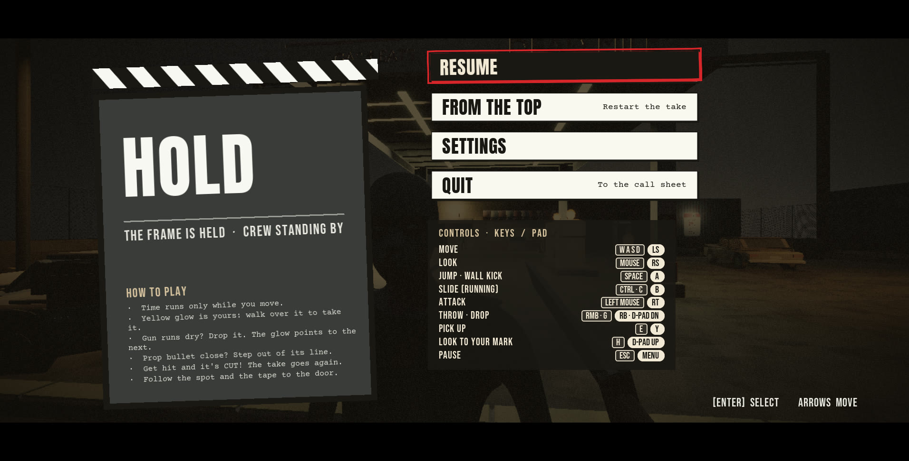

What is this scene about? One line on the slate
I finished the whole game this morning without knowing what any scene was about. Six hours later each scene opens with one handwritten line of story on the slate and calls out the objective in a band, on film in two of the three levels checked.
Day 3, Sat 14 NovHour 60
Note 5 from this morning's playtest was the one about story:
"The objective system is good but I want more emphasis on the current objective, as I just went around not knowing exactly what it is I was doing in a scene, like lore wise (though scene navigation was good and I never felt lost)."
I always knew where to go. I never knew why.
Two additions
The UI session built both by 10:45, eight minutes after the notes were logged.
The premise. One plain line per scene, in handwriting, shown at the slate on take one for about three and a half seconds. The second World session wrote the seven lines, because it built the levels and knows what's supposed to be going on in them. The brief's example was "The dead have the gas station. Get the tanker keys and get out."
The call-out. When the objective changes, a band pops in at the top centre with the short version in capitals and a count of what's left, holds for 2.4 seconds, then flies off to the script page in the corner where the full line lives. The objectives were always on that page. Nobody reads a page in the corner while a zombie is walking at them.
Two out of three
The task asks for film of three levels. UFO 01 passed at 14:45 and Noir 01 at 16:00. Zombie 01 has failed twice, because its line never appears: the level's data hadn't been rebuilt with the new text when the engine filmed it. It's waiting on one kit rerun.
And while paused
The pause screen was a joke line on a clapperboard. It's now the lessons from the tutorial, in case you skipped it or forgot.

The first tip still says time runs only while you move. That stopped being true on Friday night, when the world started crawling at quarter speed for players who stand still. Somebody should tell the card.